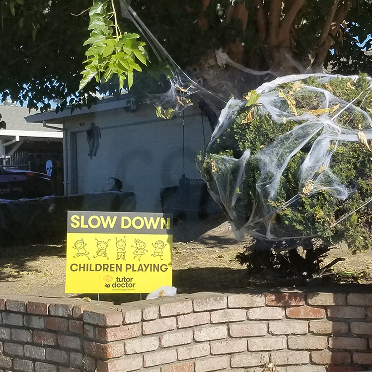
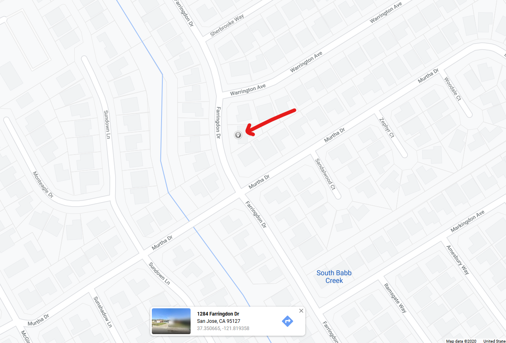
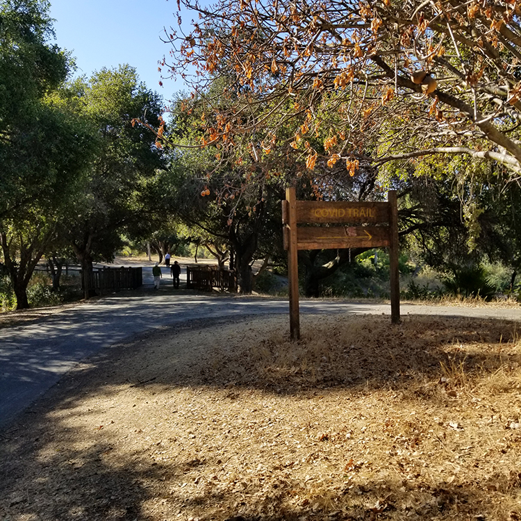
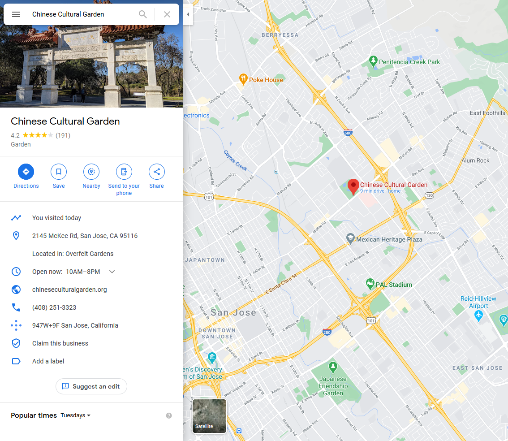
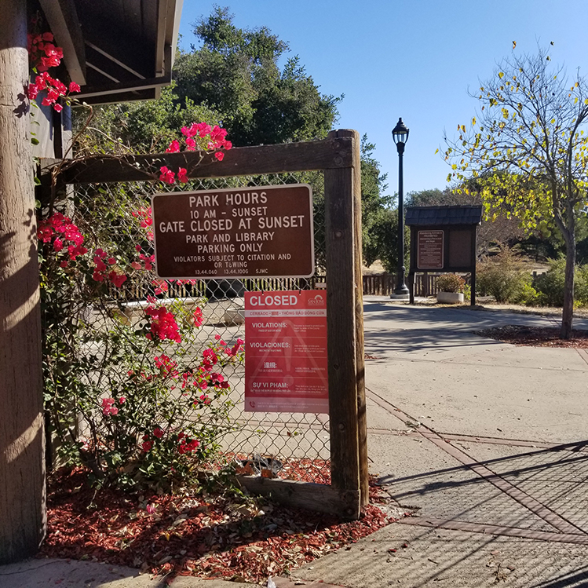
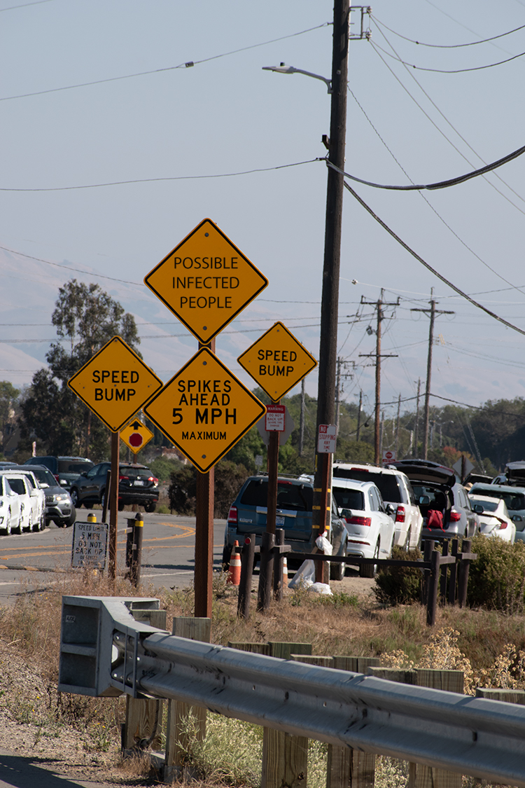
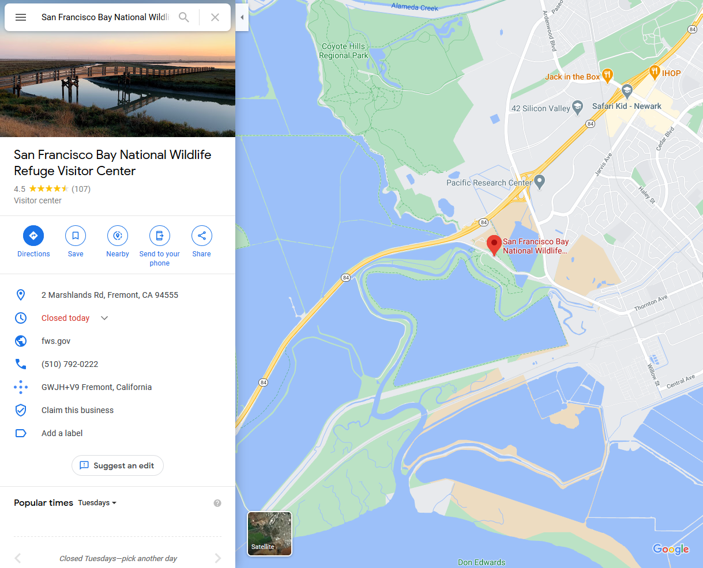

Sign 1
I found this sign while driving around my neighborhood. The house often has many kids around but recently not a lot kids have been outside. The original sign is meant for drivers, telling them to slow down. Since there are no kids around, I changed the sign to tell drivers that they can speed up.


Sign 2
This sign was taken at the Chinese Cultural Garden in San Jose, CA. I noticed that the one path had quite a few people walking on it and the other had no one on it. The original sign says "AMPHITHEATER", my sign says "COVID TRAIL" to imply that the trail is for or has people with Covid.


Sign 3
This sign was also taken at the Chinese Cultural Garden. The sign originally was about open hours for the park. My sign is about the park being closed due to safety concerns over Covid. By having the park closed people will have less motivation to come to the park and risk catching or spreading Covid to other visitors.

Sign 4
This sign was taken near Coyote Hills in Fremont, CA. The sign was taken on the road where there are lots of cars parked meaning that there are lots of people nearby. The sign I created acts as a warning to the person walking that there is a possibility that there are Covid infectd people nearby.
